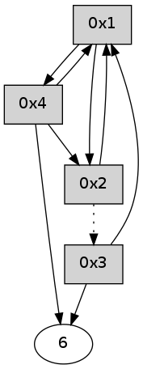

>> << IDX [start] -100 -25 -5 +0 +5 +25 +100 [325.002650976]
 Previous packets
----------------------------------------------------------------------
320.019950 beacon01(adaf) #0 coord=01,02,05,03,04,06 cycle=432.0ms assoc
-- color-indic=0 64 b7 c0
320.029910 beacon02(adaf) #0 coord=01,02,05,03,04,06 cycle=432.0ms assoc 64 e6 3f
320.039911 beacon05(adaf) #0 coord=01,02,05,03,04,06 cycle=432.0ms assoc 64 40 15
320.049911 beacon03(adaf) #0 coord=01,02,05,03,04,06 cycle=432.0ms assoc 64 dc 31
320.059911 beacon04(adaf) #0 coord=01,02,05,03,04,06 cycle=432.0ms assoc 64 7a 1b
320.069912 beacon06(adaf) #0 coord=01,02,05,03,04,06 cycle=432.0ms assoc 64 0e 07
320.081593 [Hello(4): seq=116 sym=6,2 asym=1 sysInfo= stat=6:15,0,0,0/2:5,0,0,0/1:10,0,0,0]
320.085614 [Hello(1): seq=15 sym=2,4 sysInfo= stat=2:14,0,0,0/4:0,0,0,0]
----------------------------------------------------------------------
320.512058 beacon01(adaf) #0 coord=01,02,05,03,04,06 cycle=432.0ms assoc
-- color-indic=0 64 73 af
320.522018 beacon02(adaf) #0 coord=01,02,05,03,04,06 cycle=432.0ms assoc 64 22 50
320.532021 beacon05(adaf) #0 coord=01,02,05,03,04,06 cycle=432.0ms assoc 64 84 7a
320.542020 beacon03(adaf) #0 coord=01,02,05,03,04,06 cycle=432.0ms assoc 64 18 5e
320.552022 beacon04(adaf) #0 coord=01,02,05,03,04,06 cycle=432.0ms assoc 64 be 74
320.562020 beacon06(adaf) #0 coord=01,02,05,03,04,06 cycle=432.0ms assoc 64 ca 68
320.573705 [Hello(2): seq=615 sym=4,1 asym=3 sysInfo= stat=4:0,0,0,0/1:14,0,0,0/3:1,0,0,0]
----------------------------------------------------------------------
321.004167 beacon01(adaf) #0 coord=01,02,05,03,04,06 cycle=432.0ms assoc
-- color-indic=0 64 2d ce
321.014128 beacon02(adaf) #0 coord=01,02,05,03,04,06 cycle=432.0ms assoc 64 7c 31
321.024127 beacon05(adaf) #0 coord=01,02,05,03,04,06 cycle=432.0ms assoc 64 da 1b
321.034130 beacon03(adaf) #0 coord=01,02,05,03,04,06 cycle=432.0ms assoc 64 46 3f
321.044129 beacon04(adaf) #0 coord=01,02,05,03,04,06 cycle=432.0ms assoc 64 e0 15
321.054130 beacon06(adaf) #0 coord=01,02,05,03,04,06 cycle=432.0ms assoc 64 94 09
321.064905 [Hello(1): seq=16 sym=2,4 sysInfo= stat=2:15,0,0,0/4:0,0,0,0]
321.069442 [Hello(4): seq=117 sym=6,1,2 sysInfo= stat=6:0,0,0,0/1:11,0,0,0/2:5,0,0,0]
----------------------------------------------------------------------
321.496275 beacon01(adaf) #0 coord=01,02,05,03,04,06 cycle=432.0ms assoc
-- color-indic=0 64 e9 a1
321.506236 beacon02(adaf) #0 coord=01,02,05,03,04,06 cycle=432.0ms assoc 64 b8 5e
321.516236 beacon05(adaf) #0 coord=01,02,05,03,04,06 cycle=432.0ms assoc 64 1e 74
321.526237 beacon03(adaf) #0 coord=01,02,05,03,04,06 cycle=432.0ms assoc 64 82 50
321.536237 beacon04(adaf) #0 coord=01,02,05,03,04,06 cycle=432.0ms assoc 64 24 7a
321.546237 beacon06(adaf) #0 coord=01,02,05,03,04,06 cycle=432.0ms assoc 64 50 66
321.557928 [Hello(2): seq=616 sym=1 asym=3 sysInfo= stat=1:15,0,0,0/3:2,0,0,0]
----------------------------------------------------------------------
321.988383 beacon01(adaf) #0 coord=01,02,05,03,04,06 cycle=432.0ms assoc
-- color-indic=0 64 a5 11
321.998343 beacon02(adaf) #0 coord=01,02,05,03,04,06 cycle=432.0ms assoc 64 f4 ee
322.008344 beacon05(adaf) #0 coord=01,02,05,03,04,06 cycle=432.0ms assoc 64 52 c4
322.018346 beacon03(adaf) #0 coord=01,02,05,03,04,06 cycle=432.0ms assoc 64 ce e0
322.028344 beacon04(adaf) #0 coord=01,02,05,03,04,06 cycle=432.0ms assoc 64 68 ca
322.038344 beacon06(adaf) #0 coord=01,02,05,03,04,06 cycle=432.0ms assoc 64 1c d6
322.050010 [Hello(4): seq=118 sym=6,1,2 sysInfo= stat=6:0,0,0,0/1:11,0,0,0/2:6,0,0,0]
322.055963 [Hello(1): seq=17 sym=2,4 sysInfo= stat=2:0,0,0,0/4:1,0,0,0]
----------------------------------------------------------------------
322.480490 beacon01(adaf) #0 coord=01,02,05,03,04,06 cycle=432.0ms assoc
-- color-indic=0 64 61 7e
322.490452 beacon02(adaf) #0 coord=01,02,05,03,04,06 cycle=432.0ms assoc 64 30 81
322.500450 beacon05(adaf) #0 coord=01,02,05,03,04,06 cycle=432.0ms assoc 64 96 ab
322.510451 beacon03(adaf) #0 coord=01,02,05,03,04,06 cycle=432.0ms assoc 64 0a 8f
322.520452 beacon04(adaf) #0 coord=01,02,05,03,04,06 cycle=432.0ms assoc 64 ac a5
322.542125 [Hello(2): seq=617 sym=1 asym=3 sysInfo= stat=1:0,0,0,0/3:3,0,0,0]
----------------------------------------------------------------------
322.972598 beacon01(adaf) #0 coord=01,02,05,03,04,06 cycle=432.0ms assoc
-- color-indic=0 64 2c 79
322.982558 beacon02(adaf) #0 coord=01,02,05,03,04,06 cycle=432.0ms assoc 64 7d 86
322.992560 beacon05(adaf) #0 coord=01,02,05,03,04,06 cycle=432.0ms assoc 64 db ac
323.002559 beacon03(adaf) #0 coord=01,02,05,03,04,06 cycle=432.0ms assoc 64 47 88
323.012560 beacon04(adaf) #0 coord=01,02,05,03,04,06 cycle=432.0ms assoc 64 e1 a2
323.022560 beacon06(adaf) #0 coord=01,02,05,03,04,06 cycle=432.0ms assoc 64 95 be
323.034229 [Hello(4): seq=119 sym=6,1,2 sysInfo= stat=6:0,0,0,0/1:12,0,0,0/2:7,0,0,0]
----------------------------------------------------------------------
323.464706 beacon01(adaf) #0 coord=01,02,05,03,04,06 cycle=432.0ms assoc
-- color-indic=0 64 e8 16
323.474667 beacon02(adaf) #0 coord=01,02,05,03,04,06 cycle=432.0ms assoc 64 b9 e9
323.484667 beacon05(adaf) #0 coord=01,02,05,03,04,06 cycle=432.0ms assoc 64 1f c3
323.494669 beacon03(adaf) #0 coord=01,02,05,03,04,06 cycle=432.0ms assoc 64 83 e7
323.504667 beacon04(adaf) #0 coord=01,02,05,03,04,06 cycle=432.0ms assoc 64 25 cd
323.514668 beacon06(adaf) #0 coord=01,02,05,03,04,06 cycle=432.0ms assoc 64 51 d1
323.526337 [Hello(2): seq=618 sym=1 asym=3 sysInfo= stat=1:0,0,0,0/3:3,0,0,0]
----------------------------------------------------------------------
323.956814 beacon01(adaf) #0 coord=01,02,05,03,04,06 cycle=432.0ms assoc
-- color-indic=0 64 a4 a6
323.966775 beacon02(adaf) #0 coord=01,02,05,03,04,06 cycle=432.0ms assoc 64 f5 59
323.976777 beacon05(adaf) #0 coord=01,02,05,03,04,06 cycle=432.0ms assoc 64 53 73
323.986776 beacon03(adaf) #0 coord=01,02,05,03,04,06 cycle=432.0ms assoc 64 cf 57
323.996776 beacon04(adaf) #0 coord=01,02,05,03,04,06 cycle=432.0ms assoc 64 69 7d
324.006777 beacon06(adaf) #0 coord=01,02,05,03,04,06 cycle=432.0ms assoc 64 1d 61
324.018438 [Hello(4): seq=120 sym=6,1,2 sysInfo= stat=6:0,0,0,0/1:12,0,0,0/2:8,0,0,0]
----------------------------------------------------------------------
324.448922 beacon01(adaf) #0 coord=01,02,05,03,04,06 cycle=432.0ms assoc
-- color-indic=0 64 60 c9
324.458883 beacon02(adaf) #0 coord=01,02,05,03,04,06 cycle=432.0ms assoc 64 31 36
324.468884 beacon05(adaf) #0 coord=01,02,05,03,04,06 cycle=432.0ms assoc 64 97 1c
324.478883 beacon03(adaf) #0 coord=01,02,05,03,04,06 cycle=432.0ms assoc 64 0b 38
324.488883 beacon04(adaf) #0 coord=01,02,05,03,04,06 cycle=432.0ms assoc 64 ad 12
324.498884 beacon06(adaf) #0 coord=01,02,05,03,04,06 cycle=432.0ms assoc 64 d9 0e
324.510556 [Hello(2): seq=619 sym=1 asym=3 sysInfo= stat=1:0,0,0,0/3:3,0,0,0]
----------------------------------------------------------------------
324.941030 beacon01(adaf) #0 coord=01,02,05,03,04,06 cycle=432.0ms assoc
-- color-indic=0 64 18 64
324.950991 beacon02(adaf) #0 coord=01,02,05,03,04,06 cycle=432.0ms assoc 64 49 9b
324.960991 beacon05(adaf) #0 coord=01,02,05,03,04,06 cycle=432.0ms assoc 64 ef b1
324.970992 beacon03(adaf) #0 coord=01,02,05,03,04,06 cycle=432.0ms assoc 64 73 95
324.980992 beacon04(adaf) #0 coord=01,02,05,03,04,06 cycle=432.0ms assoc 64 d5 bf
324.990992 beacon06(adaf) #0 coord=01,02,05,03,04,06 cycle=432.0ms assoc 64 a1 a3